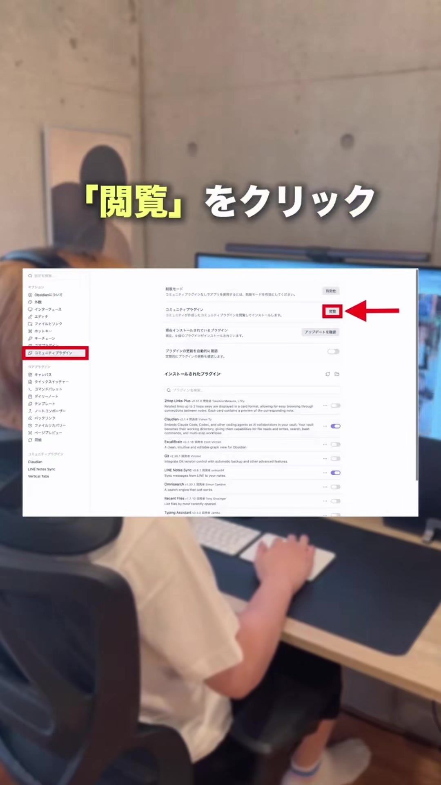
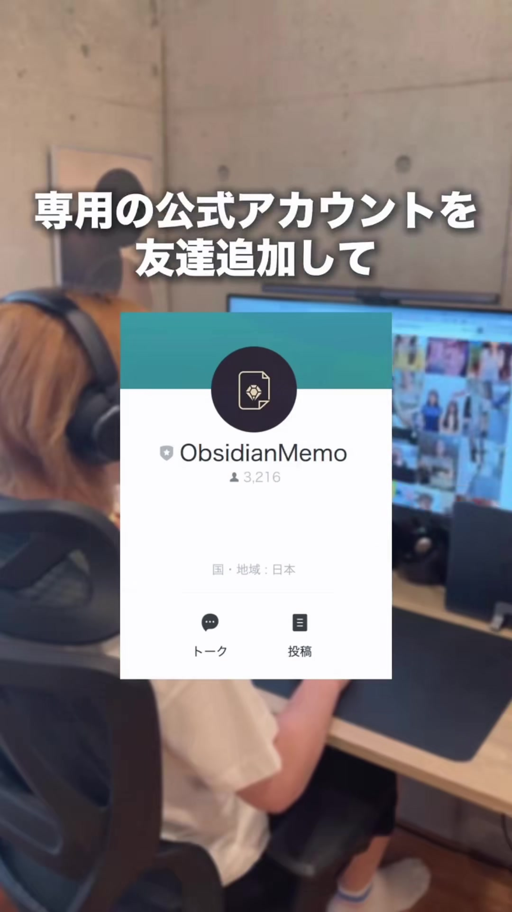
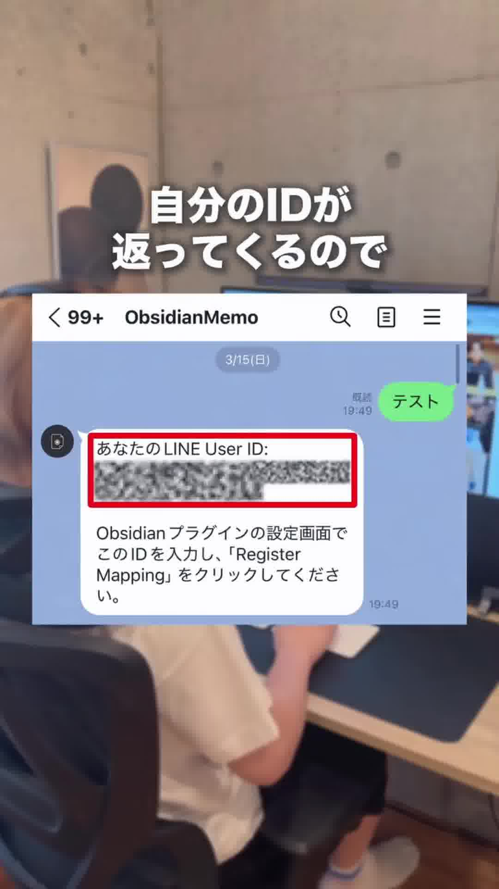
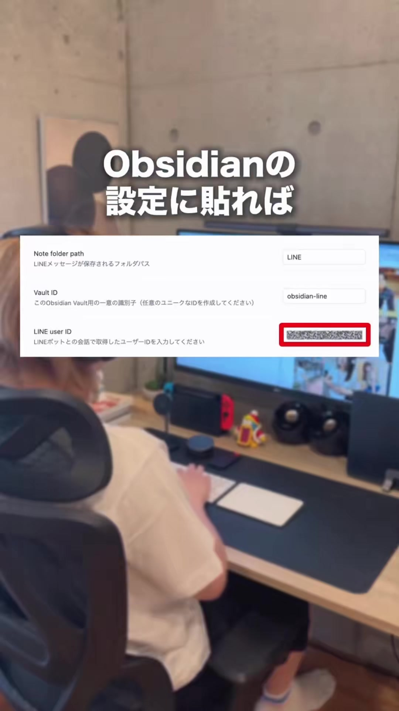
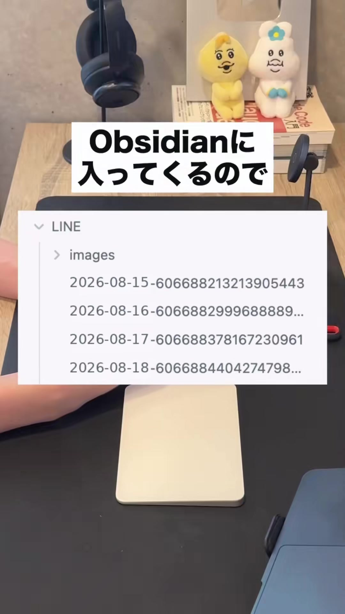

スマホのLINEに送った雑なメモ・参考URL・タスクが、PCのObsidianに全自動で蓄積。
蓄積されたデータをClaudeに読み込ませることで、自分より自分に詳しい専属AIを育てる構築ガイドです。
移動中や作業中に思いついたアイデアや気になる記事URLをLINEのKeepメモや1人グループに送っても、結局流れて埋もれてしまい、二度と見返さない「メモの墓場」になりがちでした。
LINEに送信するだけで、PCのObsidianに日付ごとのMarkdownとして自動保存。さらにClaudeに読み込ませることで、自分自身の思考やネタを反映した専属AIアシスタントが育ちます。
Obsidianのコミュニティプラグイン機能を使って、LINEのメッセージを受信・同期する専用プラグインをインストールします。
onikun84
スマホのLINEアプリから、メモの受け皿となる専用公式アカウントを友だち追加します。

追加した「ObsidianMemo」のトークルームを開き、連携に必要なあなた専用のユーザーIDを発行します。
テスト）を送信します。
Obsidianに戻り、インストールした「LINE Notes Sync」の設定画面に取得したIDを登録します。
| 設定項目 | 推奨入力値 | 説明 |
|---|---|---|
| Note folder path | LINE |
LINEメッセージが保存されるフォルダ名 |
| Vault ID | obsidian-line |
任意の識別名（英数字で自由に設定可） |
| LINE user ID | (Step 3で取得したID) |
LINEボットとの会話で返信されたIDを貼り付け |

設定完了！LINE公式アカウントにアイデアやURLを送って、Obsidianに同期されるかテストします。
LINE/ フォルダの中に、日付ごとのMarkdownノートが自動作成されます。
動画内で紹介されている「自分より自分に詳しいAIを育てる」ための、Claude向け実践プロンプトです。
Obsidianの LINE/ フォルダにあるテキストをClaudeに貼り付け、以下のプロンプトを実行してください。
以下は私がLINEからObsidianに蓄積した日々の雑なメモです。 この内容を分析し、以下の4つのカテゴリに綺麗に整理・仕分けしてください。 1. 【即実行タスク】：締切や具体的なToDo 2. 【発信ネタ・企画案】：SNSやブログ、業務に活かせるアイデアの種 3. 【知見・インプットまとめ】：参考URLや学んだ気づき 4. 【その他・思考ログ】：感情や雑感 --- [ここにObsidianのLINEメモを貼り付け] ---
あなたは私の専属コンテンツディレクターです。 以下のメモは私の最近の関心やアイデアのログです。 私の思考スタイルや言葉遣いを踏まえ、SNS（Instagramリール / X / note）でバズる可能性の高いコンテンツ企画を3案提案してください。 各企画には以下を含めてください： ・ターゲット読者 ・惹きつけるタイトル / フック ・投稿の要点（3つの箇条書き） --- [ここにObsidianのLINEメモを貼り付け] ---
Obsidianがインターネットに接続されているか、プラグイン設定の「LINE user ID」に前後の不要な空白が入っていないか確認してください。また、プラグインの「Sync」ボタンを手動で押すことで即時反映を試せます。
プラグイン自体はPC版で動かすのが安定しています。スマホでも閲覧したい場合は、Obsidian公式の「Obsidian Sync」やiCloud Drive、GitHub連携（Obsidian Git）を使ってPCとスマホのVaultを同期するのがおすすめです。
はい。動画内でも表示されている通り、画像メッセージは自動的に LINE/images/ フォルダに保存され、ノート内に画像リンクとして埋め込まれます。